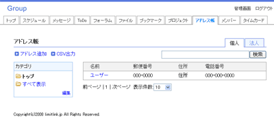

アドレスを管理するためのデータベース。 Ajaxで簡単に郵便番号と住所を検索できます。
郵便番号から住所を検索、または住所から郵便番号を検索して簡単にデータを登録できます。
検索が簡単に行えるのでアドレスをどこに登録したか分からなくなることもありません。 検索ボックスにキーワードを入力して検索するだけで必要な情報をすぐに表示します。
データをCSV出力してExcel等で印刷できます。
グループウェアの機能一覧トップ